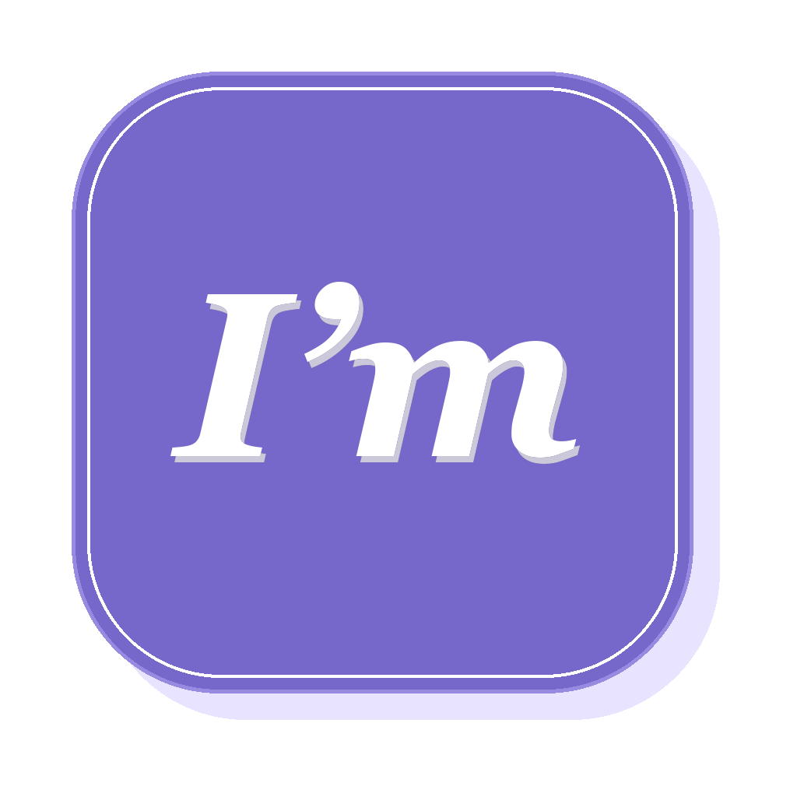

PERSONAL PAGE EDITOR
上传自己的照片和内容，自由调整模块与顺序，快速做出并发布属于你的个人网页。
WHAT YOU CAN DO
上传头像和图片，编辑经历、产品、摄影、笔记与链接。
复制、隐藏、删除和排序模块，按自己的内容组织页面。
草稿自动保存在本机，也可以手动创建历史版本并随时恢复。
导出完整网页，再部署到 GitHub Pages，获得可分享的公开链接。
WORKFLOW
START NOW
快速开始不会保留历史；安装应用后，草稿和历史版本会保存在当前设备中。